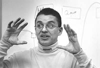

SHIPPENSBURG UNIVERSITY STUDENTS PARTICIPATE IN NETSCAPE PROJECTRichard H. Pizzarro, principal software development engineer at Netscape and a 1988 Shippensburg University graduate, arranged the project. "It's unbelievable exposure for students to get involved in a project like this," said Pizzarro. "Without being thrust into it, they can see what a large-scale engineering project is like." Nine students in Dr. Carol Wellington's Software Engineering class are adding features to the Netscape software that will widen its appeal in the market. The software includes a browser that allows users to surf the Internet. "The opportunity that my students have to work on Netscape cannot be outdone by bigger schools," said Wellington, assistant professor of computer science. "We don't know of any other place that, as part of its curriculum, is doing Netscape development. That's an impressive thing to have on your résumé when you go to look for a job." Five students are working on a feature to enable software users to view cafeteria or restaurant menus. Another group is designing a user interface, or skin, to allow blind people to use the software. "We're all really learning a lot," said Adam Gonsman, a 19-year-old sophomore. "This whole project is on the cutting edge. We're going into unfamiliar territory. We're really fortunate." The opportunity arose through emergence of the Open Source method of software engineering. In March 1998, Netscape publicly released the source code for its Communicator software through Mozilla.org, allowing independent developers to contribute additions and modifications to the original source code. "We have people all around the world who are contributing to the Mozilla effort," said Pizzarro, who helps monitor the software contributions. "It makes the product better. It lets us expand our reach, because it's not just a Web browser, but you can build applications on it. It's a platform on which to build applications. It's just so flexible. We've never had this offering before. The software will eventually be used in a number of products, not just computers. In five or 10 years, you're going to have devices -- that haven't been invented yet -- in your house to help you access information. Those devices are going to be based on this technology. That's what's exciting." By allowing a diverse group of people to contribute to its development, Netscape is ensuring that the software will have wide appeal. In turn, the Shippensburg students and other contributors gain experience and help create a new product. "The experience is going to be great," said Doug Albright, a 20-year-old sophomore. "I'm going to be learning a lot about html, XUL and how the browser works." He and others taking the Software Engineering I course are working on the requirements analysis and design phase of their project. This fall, in Software Engineering II, they will test and implement their designs.
He believes that telecommuting technology will allow more Pennsylvanians to work for computer companies in states like California and Washington. Living in Mechanicsburg and working for Mountain View, Calif.-based Netscape, Pizzarro is a testament to the potential of telecommuting and the utility of e-mail, instant messaging and other communication devices. "It can happen anywhere, especially now, the way I'm working." He's confident about Pennsylvania's potential partly because his former company, InSoft Inc., maker of desktop videoconferencing software, blossomed in Mechanicsburg, far from the glitter of Silicon Valley. Pizzarro and his former partner, Daniel L. Harple Jr., started the company in 1991, working out of their homes, and built it into a 70-employee firm valued at about $145 million. Netscape acquired the company in 1996. "I was fortunate and lucky, but I also worked my tail off," Pizzarro said, recalling his 100- to 120-hour workweeks. "It's amazing how hard I worked." For all his success, this son of a Puerto Rican immigrant is determined not to forget his roots. Remembering that a reference from an SU professor led him to his first job, Pizzarro wants to help students make contacts with potential employers through the Netscape project. "It's great exposure for them to network and meet decision makers." As a product of a State System university, he also wants to give opportunities to students who didn't have the means to attend a larger school. "I want to make sure that students at the state schools don't get overlooked just because mom and dad didn't have enough money. There's too much made of the old-world prestige. High-tech's not like that. If you can do the job, I don't care where you went to school." With his help, the Shippensburg students are getting a chance to prove their worth while gaining experience that will enhance their resumes. "It's kind of nice to have this opportunity to work on a real project," said Bruce Miller, a 21-year-old senior. "A larger project like this definitely shows a lot more ability on the programmer's part." Pizzarro hopes the Mozilla project will also help him recruit employees for Netscape. "The beauty of it is that you've got potential employees out there who are training themselves. I'm going to meet some bright, go-getter students whom we need to hire. You can never find enough talent." While visiting Wellington's class recently, he introduced himself to the students and admired their work. "This is good," he said, viewing the cafeteria-menu design on a laptop computer. "We could really use this at Netscape. This is just great." The students appreciate his support. "I think it's really great," Gonsman said of Pizzarro's contributions to the class. "It really stands as a testimony of what kind of graduates this college produces and how loyal they are to their alma mater that they're willing to come back and help the students." --SU-- |